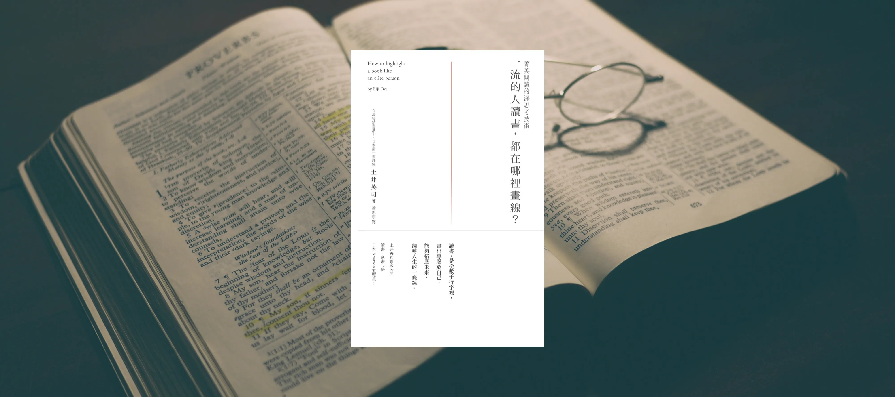

剛好聽到公司有同事分享了一本《如何閱讀一本書》，所以想說下次換我分享《一流的人讀書，都在哪裡畫線》，看著看著覺得這本書的內容似曾相似，結果不小心翻到以前的閱讀紀錄，發現了一個驚人的事實，一年前我竟然讀過這本書但卻完！全！沒！印！象（嚇）！難怪要開始記錄閱讀心得，拯救腦容量大作戰(汗)。
好，進入正題，這本書主要在跟我們分享，「一流的商業人士是如何選書，讀書的目的和心態，怎麼在對自己最有幫助的地方畫線，和最後如何吸收融為己用。」 作者是用一個非常嚴厲和直接的口吻再和你闡述這件事。另外，因為這本書完全是針對商業書來說，跟什麼小說、文學、雜誌都沒有關係，完全不是針對那種放鬆休閒娛樂的書要怎麼畫線，大家不需要有錯誤的期待。
這本書有3個蠻新奇的觀念，剛好被作者罵到：
1. 很多人患有「沒有全部讀完就不甘心」的病
小說有一個小細節沒看到，整個後面的推理結構會完全失去興致。但商業書只要有一個地方對你有幫助就好，其他派不上用場也沒關係，不用有強迫症一定要逼自己把它讀完，然後沒讀完還不能讀下一本，莫名其妙被自己逞罰。
2. 不要畫「自我陶醉線」
在書上看到作者說了某個想法，馬上就畫線然後覺得「對！沒錯！我想的果然沒錯！」，這種線就叫做 「自我陶醉線」，這種線只是自 high 用，對你的成長沒啥助益。反而要畫在你看得覺得不太舒服或不太同意的地方，跳脫舒適圈才有進步。
3.畫線要畫在「原因」，不是畫在「結果」
有的時候看到一些很酷的字句，像是最近讀到樊登寫的《讀懂一本書》講到，敘利亞人一年平均一人只讀5頁書，看到的時候覺得很聳動有很有趣，忍不住馬上畫了線，但又想到這個愛罵人的作者說：畫線要畫在「原因」，不是畫在「結果」。這時就會去思考為什麼敘利亞人年平均閱讀量只有5頁？原來是因為他們吸收知識的管道就是從周圍的親朋好友講述取得，也因此很難從多個角度去看世界。這個原因比結果的資訊有價值許多。
這本書帶給我最大的改變
比較願意去接觸那些看不太懂，很難啃的書。作者有說讀書受挫代表你是主動去挑戰這本書，主動式的思考就是閱讀的一大優點，而且讀書受挫，代表有清楚發現自己不懂的地方，把這個不懂搞懂又是一種成長。以前會遇到看不太懂的書就把他丟一邊，但因為作者都這麼激勵我了，決定把一些難啃的書再拿書來研讀一番。有一些很像教科書的磚頭書，像是財務管理、彼得杜拉克的管理學這種，讓人內心比較沒有這麼排斥，也興起想閱讀的念頭，擴展閱讀圈，讚讚！
祝福大家畫線愉快！